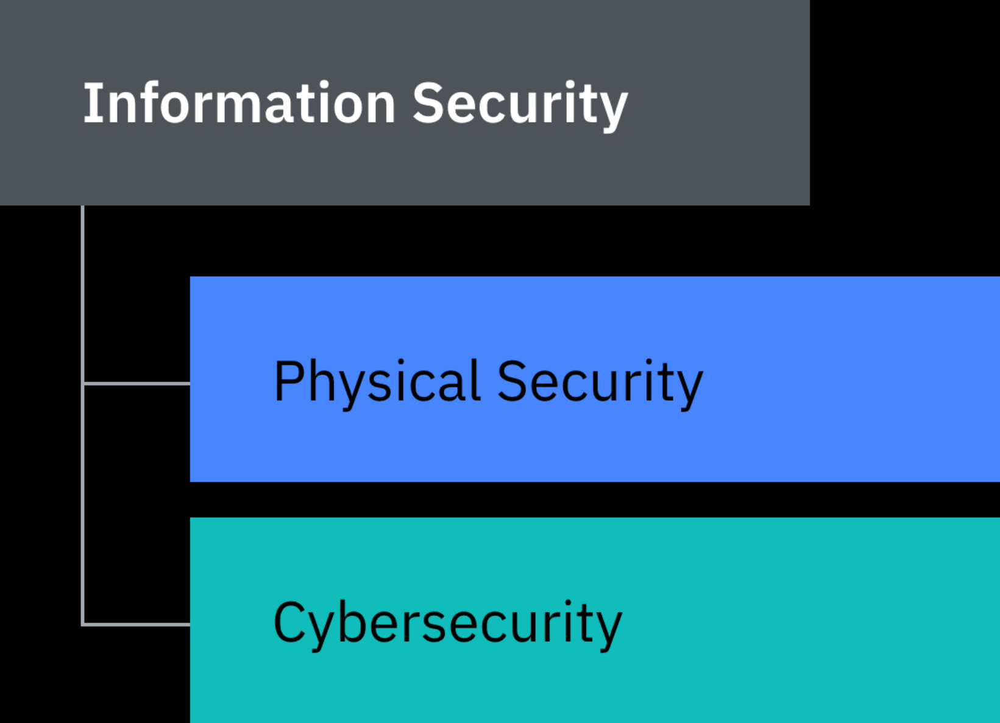

1. Cyber Security?
Let's start by thinking about what cybersecurity is and what we are trying to accomplish.
Most definitions of cybersecurity tend to focus on technology/digital element, but in the real world, most attacks typically have some digital elements as well as some human factors and occasionally a physical element too, so we should not just focus on digital elements because this limits our thought process and gives potential attackers greater flexibility.
To understand better we look at Information Security which focuses on the value of the information we are trying to protect rather than how we protect it. Below is a diagram to show that under information security are the physical elements and digital elements.

According to the National Institute of Standards and Technology (NIST) information security is: "The protection of information and information systems from unauthorized access, use, disclosure, disruption, modification, or destruction in order to provide confidentiality, integrity, and availability."
With this we can define Cybersecurity as the practices, technologies, and strategies used to protect and recover computer systems, networks, devices, and data from cyber threats. Its primary goal is to safeguard digital assets from unauthorized access, theft, damage, or disruption.
There are three element of cybersecurity People, Process and Technology These are the areas where an attacker could attack and where organizations should focus cybersecurity efforts. We shall be focusing on the element People.
People: People are the most important part of cybersecurity.First, people are the end users of digital systems and second, people are often those responsible for the design and maintenance of digital systems. Human action is by far the leading cause of cybersecurity incidents. Organizations must design secure systems with people in mind.
Process: Most activities in organizations follow clearly defined set of steps. These steps/processes can aid cybersecurity by considering security at each step or hinder cybersecurity by being frustrating for the end user.
- Good processes should have the following attributes; clear and as easy as possible, accessible or well known and consistent.
Technology: All of the underlying infrastructure. e.g device encryption and anti-malware technologies
2. Need for Risk Assessment?
Organizations depend on information technology and information systems to successfully carry out their missions and business functions.
Information systems can include very diverse systems ranging from office networks, financial and personnel systems to specialized systems like, industrial/process control systems and weapons systems.
Information systems are therefore subject to serious threats that can have adverse effects on organizational operations and assets, individuals, other organizations, and the Nation by exploiting both known and unknown vulnerabilities to compromise the confidentiality, integrity, or availability of the information being processed, stored, or transmitted by those systems.
Therefore, it is of importance that leaders, managers and staff at all levels understand their responsibilities and are held accountable for managing information security risk.
Threat: Any potential danger to information or systems.
Vulnerability: A weakness that can be exploited by a threat.
Impact: The consequences if a threat exploits a vulnerability.
Likelihood Refers to the probability that a risk scenario/risk impact occurs
Information Systems: A discrete set of information resources organized for the collection, processing, maintenance, use, sharing, dissemination of information
Risk: The possibility of something happening with negative consequences.
Information security risk: The risk associated with the operation and use of information systems that support the missions and business functions of their organizations.
3. What is Cyber Risk?
Cyber risk refers to the potential of loss or harm related to technical infrastructure or the use of technology. This can include breaches of data confidentiality, unauthorized access, damage to digital assets, or disruption of operations.
The components of a cyber risk are Threat, Vulnerability, and Impact.
All risks are not equally important. Risks that are more significant, are known as high risks and low risks to those of less significance. To get the value of a risk one will need to know the consequences and likelihood
Risk appetite is the level/value of risk an organization is willing to accept.
Risk Assessment is the process of identifying, analyzing, and evaluating risks in order to determine the best way to manage them.
Once an organization has assessed all of its risks, the emphasis is then placed upon risk management, or response. There are four responses to a risk that can be taken Accept, Reduce, Transfer and Reject.
Risk Value = Consequence x Likelihood
Consequence: The impact and associated damages
Likelihood = Adversary capability x Adversary motivation x Vulnerability severity
4. Why Cyber Risk Management is Important?
Cyber Risk Management also called cybersecurity risk management, is the process of identifying, prioritizing, managing and monitoring risks to information systems.
Cyber risk management has become a vital part of the broader enterprise risk management efforts. Companies across industries depend on information technology to carry out key business functions today, exposing them to cyber criminals, employee mistakes and other cybersecurity threats. These threats can knock critical systems offline or wreak havoc in other ways, leading to lost revenue, stolen data, long-term reputation damage and regulatory fines.
Cyber risk management is crucial because it helps organizations minimize these potential threats, ensure business continuity, and protect data assets. Effective risk management has shown to lead to fewer security incidents, less financial loss, and improved trust with stakeholders.
In a digital world, managing cyber risk is not just a necessity; it's an obligation for every responsible business.
Cybersecurity risks scenarios cannot be totally eliminated, but cyber risk management programs can help reduce the impact and likelihood of threat scenarios.
5. Key Components of Cyber Risk Management
- Risk Identification
- Asset Inventory - Identifying the critical assets that need protection e.g., hardwares, softwares , data and networks.
- Threat Identification - Recognizing the types of cyber threats that could impact these assets.
- Vulnerability Assessment - Identifying weaknesses in systems, applications, or processes that could be exploited by cyber threats.
- Business Contest - Understanding the organization's operations, industry, and external factors that may influence the risk profile.
- Risk Assessment
- Risk Likelihood - Estimating the probability of a cyber event occurring.
- Risk Impact - Assessing the potential consequences of a cyber incident on the organization.
- Risk Prioritization - Ranking risks based on their likelihood and impact on risk matrices to plot the severity of each risk, allowing them to prioritize which threats require immediate action.
- Risk Mitigation
- Risk Acceptance - Recognizing that some risks cannot be fully mitigated and accepting the residual risk.
- Risk Reduction - Implementing controls and safeguards to minimize the likelihood or impact of a cyber threat.
- Risk Transfer - Transferring some of the risks to a third party, often through insurance policies or by outsourcing specific functions to a third-party vendor.
- Risk Avoidance - Deciding to avoid risky activities altogether.
- Risk Monitoring & Review
- Continuous Monitoring - Regularly tracking the organization's cyber environment for new risks, evolving threats, and the effectiveness of existing controls.
- Incident Response Planning - Developing and maintaining a plan for how to respond in the event of a cyber incident.
- Adjusting Strategies - Cyber risks are not static, so the risk management plan must evolve over time. As new threats arise or the organization adopts new technologies, the risk assessment and mitigation strategies need to be updated accordingly.
6. Steps in Cyber Risk Management
There are several industry frameworks and standards that help organizations manage cyber risk effectively, they include; NIST Cybersecurity Framework (CSF), ISO/IEC 27005,CIS Controls and FAIR (Factor Analysis of Information Risk)
The Cyber Risk Management steps to be followed on this platform are adopted from National Institute of Standards and Technology (NIST) Cyber Security Framework (CSF).
It outlines 6 core functions; Govern, Identify, Protect, Detect, Respond and Recover
All Functions have vital roles related to cybersecurity incidents. Govern, Identify, and Protect outcomes help prevent and prepare for incidents, while Govern, Detect, Respond, and Recover outcomes help discover and manage incidents.
Actions that support Govern, Identify, Protect, and Detect should all happen continuously, and actions that support Respond and Recover should be ready at all times and happen when cybersecurity incidents occur.
Govern
Addresses an understanding of organizational context, the establishment of cybersecurity strategy & management, policy, and oversight of cybersecurity strategy.
Identify
The organization's current cybersecurity risks are understood. Categories include:
- Asset Management: Assets (e.g., data, hardware, software, facilities, services, people) that enable the organization to achieve business purposes are identified and managed consistent with their relative importance to organizational objectives and risk strategy
- Improvement: Improvements to organizational cybersecurity risk management processes, procedures and activities.
- Risk Assessment: The cybersecurity risk to the organization, assets, and individuals is understood by the organization enabling prioritization of risks.
- Vulnerabilities in assets are identified, validated, and recorded
- Cyber threat intelligence is received from Open Source Intelligence or other verified source
- Internal and external threats are identified and recorded
- Business Environment: Understanding organizational structure, roles, responsibilities, and dependencies.
- Supply Chain Risk Management: Identifying risks associated with suppliers, partners, and vendors.
Protect
Implement safeguards to manage and ensure the security of critical assets.
Once assets and risks are identified and prioritized, Protect supports the ability to secure those assets to prevent or lower the likelihood and impact of adverse cybersecurity events
- Identity Management, Authentication, and Access Control: Access to physical and logical assets is limited to authorized users, services, and hardware.
- Data Security: Safeguards to protect data at rest,in use and in transit integrity, confidentiality, and availability.
- Training and Awareness: Programs for educating employees on cybersecurity threats and best practices.
- Platform Security: The hardware, software and services of physical and virtual platforms have configuration management, they are maintained, replaced, and removed inline with risk, logs are generated and used for monitoring, installation and execution of unauthorized software are prevented and secure software development practices are observed to ensure confidentiality, integrity, and availability of data
- Technology Infrastructure Resilience: Security architectures are managed ensuring networks and environments are protected from unauthorized logical access and usage(e.g., firewalls, intrusion detection systems), technology assets are protected from environmental threats
Detect
Possible cybersecurity attacks, vulnerabilities and compromises are found and analyzed.
This enables the timely discovery and analysis of anomalies, indicators of compromise, and other potentially adverse events that may indicate that cybersecurity attacks and incidents are occurring.
- Adverse Anomalies and Events Analysis: Monitoring unusual activities and events that could indicate a potential threat incident.
- Continuous Monitoring: Assets are monitored to find anomalies, indicators of compromise, and other potentially adverse events.
- Log Analysis: Review and analysis of logs from various systems to identify potential threats.
Respond
Actions regarding a detected cybersecurity incident are taken.
Respond supports the ability to contain the effects of cybersecurity incidents. Categories within this function cover
- Incident Management/Response Planning: Development and maintenance of incident response plans that ensure incidents are managed in time.
- Incident Analysis: Processes for understanding the scope and impact of an incident to ensure effective response and support forensics and recovery activities.
- Incident Response Reporting and Communication: Protocols for communication during and after an incident, to the internal and external stakeholders.
- Incident Mitigation: Strategies to contain, eradicate, and remediate security incidents.
- Improvements: Incorporating lessons learned from incidents to improve response capabilities.
Recover
Assets and operations affected by a cybersecurity incident are restored.
Recover supports the timely restoration of normal operations to reduce the effects of cybersecurity incidents and enable appropriate communication during recovery efforts.
It has the following categories
- Incident Recovery Plan Execution: Restoration activities are performed to ensure operational availability of systems and services affected by cybersecurity incidents.
- Incident Recovery Communication: Recovery activities and progress in restoring operational capabilities are communicated to designated internal and external stakeholders.
- Improvements: Analysis of incidents to improve recovery strategies.
7. Types of Cyber Attacks
Cyber attack is a malicious attempts to damage, disrupt, or gain unauthorized access to computer systems, networks, or devices, through cyber means.
Phishing
The practice of sending messages(Emails or texts) that appear to be from trusted sources with the goal of gaining personal information or influencing users to do something.
Types of phishing include; email phishing, spear phishing(targeted phishing), Smishing(sms phishing), Vishing(voice phishing)
Malware
A catch-all term for malicious software. It is any software designed to perform in a detrimental manner to a targeted user without the user's informed consent.
Triggered secretly when a user runs a program or downloads a file. Examples include Ransomware, trojan, worms, spyware, adware, viruses and rootkits
Man in the middle (MitM) attack
MitM attack occurs when hackers insert themselves in the communications between a client and a server,this allows hackers to see what's being sent and received by both sides.
Denial of Service (DoS) attack
A DoS attack is any type of attack that causes a complete or partial system outage. The means to perform a DoS attack can range from causing a system to crash to making it unreachable or incapable of continuing work due to abnormal levels of forwarded illegitimate network traffic.
Distributed Denial of Service (DDoS)
A DDoS attack is a DoS attack that comes from more than one source at the same time.
The machines used in such attacks are collectively known as “botnets” and will have previously been infected with malicious software, so they can be remotely controlled by the attacker.
Structured query language (SQL) injection
SQL allows users to query databases. SQL injection is the placement of malicious code in SQL queries, usually via web page input. A successful attack allows common SQL commands to be run. This can include deleting the database itself!
SQL injection is one of the most common web hacking techniques.
Domain name system (DNS) attack
DNS is one of the core protocols used on the internet.
The DNS protocol allows a computer to resolve a domain to an IP address, which allows a user to, for example, reach UoN's main website by typing “uonbi.ac.ke” instead of writing an IP address that is hard to remember.
Attacks directly targeting DNS, including DNS spoofing, domain hijacking, and cache poisoning.